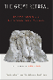
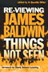

Browse
other Author lists:
A B C
D E F
G H I
J K L
M N O
P Q R
S T U
V W X
Y Z |
 |
La
Merica
Images of Italian Greenhorn Experience
La
Sorte, Michael A.
224 pp • 5.5x8.25 • Spring 1985
paper 978-1-59213-234-8
cloth 978-0-87722-382-5
|
 |
Child,
Parent, and State
Law and Policy Reader
edited
by Humm, Randall S., Beate Anne Ort, Martin Mazen Anbari, Wendy
S. Lader and William Scott Biel
712 pp • 7x10 • Spring 1994
paper 978-1-56639-134-4
cloth 978-1-56639-133-7
|
 |
Person
to Person
edited
by Graham, George and Hugh LaFollette
336 pp • Fall 1988
cloth 978-0-87722-576-8 |
 |
Writing
Wrongs
The Work of Wallace Shawn
King,
W. D., foreword by John Lahr
264 pp • 5x9 • Spring 1997
cloth 978-1-56639-517-5 |
|  |
The Great Refusal
Herbert Marcuse and Contemporary Social Movements
edited by Lamas, Andrew T., Todd Wolfson, and Peter N. Funke, with a foreword by Angela Y. Davis
440 pp • 6x9 • Fall 2016
paper 978-1-4399-1304-8
cloth 978-1-4399-1303-1 |
 |
Newcomers
in Workplace
Immigrants and the Restructing of the U.S. Economy
edited
by Lamphere, Louise, Alex Stepick and Guillermo Grenier
320 pp • 6x9 • Fall 1993
paper 978-1-56639-131-3
cloth 978-1-56639-124-5 |
|
Color
and Consciousness
An Essay in Metaphysics
Landesman,
Charles
149 pp • Spring 1989
cloth 978-0-87722-616-1 |
 |
Beyond
the Schoolhouse Gate
Free Speech and the Inculcation of Values
Lane,
Robert Wheeler
224 pp • 5.5x8.25 • Spring 1995
paper 978-1-56639-275-4
cloth 978-1-56639-274-7
|
 |
Storytelling
in Daily Life
Performing Narrative
Langellier,
Kristin M. and Eric E. Peterson
288 pp • 7x10 • Fall 2003
paper 978-1-59213-213-3
cloth 978-1-59213-212-6
|
 |
Possibility,
Necessity, and Existence
Abbagnano and His Predecessors
Langiulli,
Nino
208 pp • 6x9 • Spring 1992
cloth 978-0-87722-921-6 |
 |
New
Social Movements
From Ideology to Identity
edited
by Lara�a, Enrique, Hank Johnston and Joseph R. Gusfield
368 pp • 6x9 • Fall 1994
paper 978-1-56639-187-0
cloth 978-1-56639-186-3
|
|
Caribbean Currents
Caribbean Music from Rumba to Reggae
Third Edition
Manuel,
Peter with Michael Largey
360 pp • 6x9 • Fall 2016
paper 978-1-4399-1400-7
cloth 978-1-4399-1399-4
|
 |
Caribbean
Currents
Caribbean Music from Rumba to Reggae
Manuel,
Peter with Kenneth Bilby and Michael Largey
336 pp • 6x9 • Spring 2006
paper 978-1-56639-339-3
cloth 978-1-56639-338-6
|
 |
Search
for Government Efficiency
From Hubris to Helplessness
Downs,
George W. and Patrick D. Larkey
252 pp • Fall 1985
cloth 978-0-87722-409-9 |

|
Comprehending
Columbine
Larkin, Ralph W.
264 pp • 6x9 • Fall 2006
paper 978-1-59213-491-5
cloth 978-1-59213-490-8
|

|
"Building Like Moses with Jacobs in Mind"
Contemporary Planning in New York City
Larson, Scott
198 pp • 6x9 • Spring 2013
paper 978-1-4399-0970-6
cloth 978-1-4399-0969-0
|
 |
Pacifica
Radio
The Rise of an Alternative Network
Lasar,
Matthew
320 pp • 6x9 • Spring 2000
paper 978-1-56639-777-3
|
 |
In
Search of Parenthood
Coping with Infertility and High-Tech Conception
Lasker,
Judith N. and Susan Borg
240 pp • 6x9 • Fall 1994
paper 978-1-56639-259-4
cloth 978-1-56639-258-7 |
 |
Multiple
Modernities
Cinemas and Popular Media in Transcultural East Asia
edited
by Lau, Jenny Kwok Wah
264 pp • 7x10 • Fall 2002
paper 978-1-56639-986-9
cloth 978-1-56639-985-2
|

|
Body Language
Sisters in Shape, Black Women's Fitness, and Feminist Identity Politics
Lau, Kimberly J.
204 pp • 5.5x8.25 • Fall 2011
paper 978-1-4399-0309-4
cloth 978-1-4399-0308-7
|
 |
Working
People of Philadelphia, 1800-1850
Laurie,
Bruce
Spring 1983
paper 978-0-87722-292-7
|
 |
The Death and Life of the Single-Family House
Lessons from Vancouver on Building a Livable City
Lauster, Nathanael
262 pp • 6x9 • Fall 2016
paper 978-1-4399-1394-9
cloth 978-1-4399-1393-2 |
 |
This
Fine Place So Far from Home
Voices of Academics from the Working Class
edited
by Dews, C.L. Barney and Carolyn Leste Law
352 pp • 6x9 • Spring 1995
paper 978-1-56639-291-4
cloth 978-1-56639-290-7
|
 |
Out
in the South
edited
by Dews, Carlos L. and Carolyn Leste Law
256 pp • 7x10 • Fall 2000
paper 978-1-56639-814-5
cloth 978-1-56639-813-8
|
 |
Recovered
Legacies
Authority and Identity in Early Asian American Literature
edited
by Lawrence, Keith and Floyd Cheung
320 pp • 6x9 • Spring 2005
paper 978-1-59213-119-8
cloth 978-1-59213-118-1
|
 |
The
Underclass Question
edited
by Lawson, Bill E., foreword by William Julius Wilson
232 pp • 6x9 • Spring 1992
paper 978-1-56639-062-0
cloth 978-0-87722-922-3 |
|
Running
for Freedom
Civil Rights and Black Politics in White America, 1941-1988
Lawson,
Steven F.
320 pp • Fall 1990
cloth 978-0-87722-792-2 |
 |
A Midwestern Mosaic
Immigration and Political Socialization in Rural America
Lay, J. Celeste
238 pp • 6x6 • Spring 2012
paper 978-1-4399-0793-1
cloth 978-1-4399-0792-4 |
 |
Journeys
of Women in Science and Engineering
No Universal Constants
Ambrose,
Susan A., Kristin L. Dunkle, Barbara B. Lazarus, Indira Nair
and Deborah A. Harkus
512 pp • 7x10 • Spring 1997
paper 978-1-56639-528-1
cloth 978-1-56639-527-4
|
 |
Asian American Plays for a New Generation
edited by Lee, Josephine, Don Eitel, and R. A. Shiomi
336 pp • 6x9 • Spring 2011
paper 978-1-4399-0516-6
cloth 978-1-4399-0515-9
|
 |
Performing
Asian America
Race and Ethnicity on the Contemporary Stage
Lee,
Josephine
256 pp • 6x9 • Spring 1997
paper 978-1-56639-637-0
cloth 978-1-56639-502-1
|
 |
Orientals
Asian Americans in Popular Culture
Lee,
Robert G.
288 pp • 6x9 • Fall 1998
paper 978-1-56639-753-7
cloth 978-1-56639-658-5
|
 |
Derrida
and Wittgenstein
Garver,
Newton and Seung-Chong Lee
264 pp • 5.5x8.25 • Spring 1994
paper 978-1-56639-374-4
cloth 978-1-56639-172-6 |

|
Claiming the Oriental Gateway
Prewar Seattle and Japanese America
Lee, Shelley Sang-Hee
272 pp • 6x9 • Fall 2010
paper 978-1-4399-0214-1
cloth 978-1-4399-0213-4
|
 |
Literary
Gestures
The Aesthetic in Asian American Writing
edited
by Davis, Roc�o G. and Sue-Im Lee 248 pp •
6x9 • Fall 2005
paper 978-1-59213-365-9
cloth 978-1-59213-364-2
|

|
Searching for Mr. Chin
Constructions of Nation and the Chinese in West Indian Literature
Lee-Loy, Anne-Marie
198 pp • 5.5x8.25 • Spring 2010
cloth 978-1-43990-130-4
|
|  |
Re-Viewing
James Baldwin
Things Not Seen
edited
by Miller, D. Quentin, foreword by David Adams Leeming
312 pp • 6x9 • Fall 1999
paper 978-1-56639-737-7
cloth 978-1-56639-736-0
|
 |
Roy
Orbison
The Invention of an Alternative Rock Masculinity
Lehman,
Peter
224 pp • 6x9 • Spring 2003
paper 978-1-59213-037-5
cloth 978-1-59213-036-8
|
 |
Running
Scared
Masculinity and the Representation of the Male Body
Lehman,
Peter
256 pp • 6.5x9.25 • Fall 1993
paper 978-1-56639-222-8
cloth 978-1-56639-099-6
|
 |
The
Viable Polity
Lehman,
Edward W.
296 pp • 6x9 • Fall 1992
cloth 978-0-87722-994-0 |
 |
Democracy
and Development in Latin America
Economics, Politics and Religion in the Post-War Period
Lehmann,
David
272 pp • 6x9 • Spring 1990
paper 978-1-56639-011-8
cloth 978-0-87722-723-6 |
 |
Queer
Family Values
Debunking the Myth of the Nuclear Family
Lehr,
Valerie
224 pp • 6x9 • Spring 1999
paper 978-1-56639-684-4
cloth 978-1-56639-683-7
|
 |
Officially
Gay
The Political Construction of Sexuality by the U.S. Military
Lehring,
Gary L.
248 pp • 5.5x8.25 • Spring 2003
paper 978-1-59213-035-1
cloth 978-1-59213-034-4
|

|
A Guide to the Great Gardens of the Philadelphia Region
Text by Levine, Adam
Photographs by Cardillo, Rob
192 pp • 5.375x9.125 • Spring 2007
paper 978-1-59213-510-3
|
|
Degrees
of Equality
The American Association of University Women and the Challenge
of Twentieth-Century Feminism
Levine,
Susan, afterword by Alice Ann Leidel
240 pp • 6x9 • Spring 1995
cloth 978-1-56639-326-3 |
 |
Psychology
of Attitude Change and Social Influence
Zimbardo,
Philip G. and Michael R. Leippe
400 pp • Spring 1991
cloth 978-0-87722-852-3 |
 |
Challenging Perspectives on Street-Based Sex Work
edited by Hail-Jares, Katie, Corey S. Shdaimah, and Chrysanthi S. Leon
308 pp • 6x9 • Spring 2017
paper 978-1-4399-1454-0
cloth 978-1-4399-1453-3
|
 |
Making
Ethnic Choices
California's Punjabi Mexican Americans
Leonard,
Karen Isaksen
352 pp • 6x9 • Spring 1992
paper 978-1-56639-202-0
cloth 978-0-87722-890-5
|
 |
Art, Politics, and Development
How Linear Perspective Shaped Policies in the Western World
Lepenies, Philipp H.
214 pp • 6x9 • Fall 2013
cloth 978-1-4399-1084-9
|
 |
Young
Unwed Fathers
Changing Roles and Emerging Policies
edited
by Lerman, Robert I. and Theodora J. Ooms
360 pp • 6x9 • Spring 1993
paper 978-1-56639-318-8
cloth 978-1-56639-048-4
|
 |
Fireweed
A Political Autobiography
Lerner,
Gerda
408 pp • 7x10 • Spring 2002
paper 978-1-59213-236-2
cloth 978-1-56639-889-3
|
 |
Granville
Hicks
The Intellectual in Mass Society
Levenson,
Leah and Jerry Natterstad
336 pp • 6x9 • Fall 1993
cloth 978-1-56639-104-7 |
 |
Messages from Home
The Parent-Child Home Program for Overcoming Educational Disadvantage
Levenstein, Phyllis and Susan Levenstein
Revised and Updated Edition
288 pp • 6x9 • Spring 2008
paper 978-1-59213-677-3
cloth 978-1-59123-676-6
|
 |
Public
Dollars for Private Schools
The Case of Tuition Tax Credits
edited
by James, Thomas and Henry M. Levin
285 pp • Fall 1983
paper 978-0-87722-386-3
cloth 978-0-87722-316-0 |
 |
The
Reconquest of Montreal
Language Policy and Social Change in a Bilingual City
Levine,
Marc V.
320 pp • Spring 1990
paper 978-0-87722-899-8
cloth 978-0-87722-703-8 |
|
Degrees
of Equality
The American Association of University Women and the Challenge
of Twentieth-Century Feminism
Levine,
Susan, afterword by Alice Ann Leidel
240 pp • 6x9 • Spring 1995
cloth 978-1-56639-326-3 |
 |
Radical
Sociologists and the Movement
Experiences, Lessons, and Legacies
edited
by Oppenheimer, Martin, Martin J. Murray and Rhonda F. Levine
256 pp • Fall 1990
cloth 978-0-87722-745-8 |
 |
Images
of Appalachian Coalfields
Levy,
Builder, introduction by Helen Matthews Lewis, foreword by Cornell
Capa
144 pp • 8x10 • Spring 1989
cloth 978-0-87722-588-1 |
 |
The
Holocaust and Memory in the Global Age
Levy,
Daniel and Natan Sznaider, translated by Assenka Oksiloff 240
pp • 5.5x8.25 • Fall 2005
paper 978-1-59213-276-8
cloth 978-1-59213-275-1
|
 |
The Enigmatic Academy
Class, Bureaucracy, and Religion in American Education
Churchill, Christian J., and Gerald E. Levy
234 pp • 6x9 • Spring 2012
paper 978-1-4399-0784-9
cloth 978-1-4399-0783-2 |
 |
Empowering Young Writers
The Writers Matter Approach
Yost, Deborah S., Robert Vogel and Kimberly E. Lewinski
192 pp • 6x9 • Spring 2014
paper 978-1-4399-1082-5
cloth 978-1-4399-1081-8 |
 |
It
Comes from the People
Community Development and Local Theology
Hinsdale,
Mary Ann, Helen M. Lewis and S. Maxine Waller
400 pp • 6x9 • Fall 1994
paper 978-1-56639-212-9
cloth 978-1-56639-211-2
|
 |
Manufacturing
Suburbs
Building Work and Home on the Metropolitan Fringe
edited
by Lewis, Robert
304 pp • 6x9 • Fall 2004
paper 978-1-59213-086-3
cloth 978-1-59213-085-6
|
|
Black
Workers
A Documentary History from Colonial Times to the Present
edited
by Foner, Philip S. and Ronald L. Lewis
400 pp • Fall 1988
paper 978-0-87722-554-6
cloth 978-0-87722-592-8 |
|
Images
of Appalachian Coalfields
Levy,
Builder, introduction by Helen Matthews Lewis, foreword by Cornell
Capa
144 pp • 8x10 • Spring 1989
cloth 978-0-87722-588-1 |
 |
Gender
Politics and MTV
Voicing the Difference
Lewis,
Lisa A.
300 pp • Spring 1990
paper 978-0-87722-942-1
cloth 978-0-87722-693-2 |
 |
Labor's
War at Home
The CIO in World War II
Lichtenstein,
Nelson
352 pp • 6x9 • Spring 2003
paper 978-1-59213-197-6
cloth 978-1-59213-196-9
|
 |
Myths
about the Powerless
Contesting Social Inequalities
edited
by Lykes, M. Brinton, Ali Banuazizi, Ramsay Liem and Michael
Morris, foreword by George W. Albee
416 pp • 6x9 • Spring 1996
paper 978-1-56639-422-2
cloth 978-1-56639-421-5
|
 |
The
Making of Asian America through Political Participation
Lien,
Pei-te
312 pp • 6x9 • Fall 2001
paper 978-1-56639-895-4
cloth 978-1-56639-894-7
|

|
The Transnational Politics of Asian Americans
Foreword by Don Nakanishi
edited by Collet, Christian, Pei-te Lien
252 pp • 6x9 • Spring 2009
paper 978-1-59213-861-6
cloth 978-1-59213-860-9
|
 |
Lesbian
and Gay Writing
An Anthology of Critical Essays
edited
by Lilly, Mark
220 pp • Spring 1990
cloth 978-0-87722-706-9 |
 |
Transnational
Asian American Literature
Sites and Transits
edited
by Lim, Shirley Geok-lin, John Blair Gamber, Stephen Hong Sohn and
Gina Valentino 320 pp • 6x9 • Fall
2005
paper 978-1-59213-451-9
cloth 978-1-59213-450-2
|
 |
Reading
the Literatures of Asian America
edited
by Lim, Shirley Geok-lin and Amy Ling
384 pp • 6x9 • Fall 1992
paper 978-0-87722-936-0
cloth 978-0-87722-935-3
|
 |
Re/collecting
Early Asian America
Essays in Cultural History
edited
by Lee, Josephine, Imogene L. Lim and Yuko Matsukawa
384 pp • 7x10 • Spring 2002
paper 978-1-56639-964-7
cloth 978-1-56639-963-0
|
 |
An
Indian in White America
Monroe,
Mark, edited by Carolyn Reyer, afterword by Kenneth Lincoln
256 pp • 6x9 • Fall 1994
paper 978-1-56639-235-8
cloth 978-1-56639-234-1 |
 |
The
White Sox Encyclopedia
Lindberg,
Richard C., photographs by Mark Fletcher
592 pp • 9x12 • Spring 1997
cloth 978-1-56639-449-9 |
|
Chinese
St. Louis
From Enclave to Cultural Community
Ling,
Huping
296 pp • 6x9 • Fall 2004
paper 978-1-59213-039-9
cloth 978-1-59213-038-2
|
|
Reading
the Literatures of Asian America
edited
by Lim, Shirley Geok-lin and Amy Ling
384 pp • 6x9 • Fall 1992
paper 978-0-87722-936-0
cloth 978-0-87722-935-3
|
 |
Yellow
Light
The Flowering of Asian American Arts
edited
by Ling, Amy
384 pp • 7x10 • Fall 2000
paper 978-1-56639-817-6
cloth 978-1-56639-670-7 |
 |
Philosophy
Goes to School
Lipman,
Matthew
250 pp • Spring 1988
paper 978-0-87722-555-3
cloth 978-0-87722-537-9 |
 |
Philosophy
in the Classroom
Lipman,
Matthew, Ann Margaret Sharp and Frederick S. Oscanyan
240 pp • Spring 1985
paper 978-0-87722-183-8
|
 |
Change
from Within
Humanizing Social Welfare Organizations
edited
by Resnick, Herman and Rino J. Patti, foreword by Ronald Lippitt
350 pp • Spring 1980
paper 978-0-87722-200-2
cloth 978-0-87722-173-9 |
 |
A
Life in the Struggle
Ivory Perry and the Culture of Opposition
Lipsitz,
George
320 pp • 6x9 • Spring 1995
paper 978-1-56639-321-8
|
 |
How Racism Takes Place
Lipsitz, George
320 pp • 6x9 • Spring 2011
paper 978-1-4399-0256-1
cloth 978-1-4399-0255-4
|
 |
The
Possessive Investment in Whiteness
How White People Profit from Identity Politics
Lipsitz,
George Revised and Expanded
Edition
312 pp • 6x9 • Spring 2006
paper 978-1-59213-494-6
cloth 978-1-59213-493-9
|
|
Environmental
Ethics and Forestry
A Reader
edited
by List, Peter C.
416 pp • 7x10 • Spring 2000
paper 978-1-56639-785-8
cloth 978-1-56639-784-1
|

|
Danny
Litwhiler
Living the Baseball Dream
Litwhiler, Danny with Jim Sargent, foreword by Stan Musial
312 pp • 6x9 • Fall 2006
cloth 978-1-59213-524-0
|
 |
Countervisions
Asian American Film Criticism
edited
by Hamamoto, Darrell Y. and Sandra Liu
317 pp • 7x10 • Spring 2000
paper 978-1-56639-776-6
cloth 978-1-56639-775-9 |
 |
Beyond
the City Limits
Urban Policy and Economics Restructuring in Comparative Perspective
edited
by Logan, John R. and Todd Swanstrom
288 pp • Fall 1990
paper 978-0-87722-944-5
cloth 978-0-87722-733-5 |
 |
Family
Ties
Enduring Relations between Parents and Their Grown Children
Logan,
John R. and Glenna D. Spitze
304 pp • 6x9 • Fall 1996
paper 978-1-56639-472-7
cloth 978-1-56639-471-0 |
 |
Breaking
Even
The Financial Management of Not-for-Profit Businesses
Lohmann,
Roger A.
Fall 1981
paper 978-0-87722-247-7
cloth 978-0-87722-166-1 |
 |
Managing
Contracted Services in the Nonprofit Agency
Administrative, Ethical, and Political Issues
Bernstein,
Susan R., foreword by Roger A. Lohmann
230 pp • 6x9 • Spring 1991
paper 978-0-87722-809-7
cloth 978-0-87722-808-0
|
 |
Time
to Care
Redesigning Child Care to Promote Education, Support Families,
and Build Communities
Lombardi,
Joan
248 pp • 6x9 • Fall 2002
paper 978-1-59213-009-2
cloth 978-1-59213-008-5
|
 |
Undocumented Fears
Immigration and the Politics of Divide and Conquer in Hazleton, Pennsylvania
Longazel, Jamie
226 pp • 6x9 • Spring 2016
paper 978-1-4399-1268-3
cloth 978-1-4399-1267-6
|
 |
Prison
Masculinities
edited
by Sabo, Don, Terry A. Kupers and Willie London
296 pp • 7x10 • Fall 2000
paper 978-1-56639-816-9
cloth 978-1-56639-815-2
|
|
Selma's
Peacemaker
Ralph Smeltzer and Civil Rights Mediation
Longenecker,
Steve L.
288 pp • Fall 1987
cloth 978-0-87722-489-1 |
 |
Why
I Burned My Book and Other Essays on Disability
Longmore,
Paul K.
288 pp • 6x9 • Spring 2003
paper 978-1-59213-024-5
cloth 978-1-59213-023-8
|

|
Demanding Respect
The Evolution of the American Comic Book
Lopes, Paul
260 pp • 6x9 • Spring 2009
paper 978-1-59213-443-4
cloth 978-1-59213-442-7
|
 |
Bill Giles and Baseball
Lord, John B.
328 pp • 6x9 • Spring 2014
cloth 978-1-43990-786-3
|
 |
Women
in the Sanctuary Movement
Lorentzen,
Robin
240 pp • Spring 1991
cloth 978-0-87722-768-7 |
|
Women
and Trade Unions in Eleven Industrialized Countries
edited
by Cook, Alice H., Val R. Lorwin and Arlene Kaplan Daniels
360 pp • Fall 1983
cloth 978-0-87722-319-1 |
 |
The
Maya Diaspora
Guatemalan Roots, New American Lives
edited
by Loucky, James and Marilyn M. Moors
248 pp • 6x9 • Fall 2000
paper 978-1-56639-795-7
cloth 978-1-56639-794-0
|
 |
Jobs and Economic Development in Minority Communities
edited
by Ong, Paul, and Anastasia Loukaitou-Sideris 320
pp • 6x9 • Spring 2006
paper 978-1-59213-410-6
cloth 978-1-59213-409-0
|
 |
Italian
and Irish Filmmakers in America
Ford, Capra, Coppola, and Scorsese
Lourdeaux,
Lee
288 pp • Spring 1990
paper 978-1-56639-087-3
cloth 978-0-87722-697-0 |
 |
Positively
No Filipinos Allowed
Building Communities and Discourse
edited
by Tiongson, Jr., Antonio T., Edgardo V. Gutierrez and Ricardo
V. Gutierrez, foreword by Lisa Lowe
272 pp • 6x9 • Fall 2005
paper 978-1-59213-122-8
cloth 978-1-59213-121-1
|

|
Music, Disability, and Society
Lubet, Alex
208 pp • 5.5x8.25 • Fall 2010
paper 978-1-4399-0026-4
cloth 978-1-4399-0025-6
|
 |
Just Who Loses?
Discrimination in the United States, Volume 2
Lucas, Samuel Roundfield
370 pp • 6x9 • Fall 2012
cloth 978-1-4399-0850-1 |
 |
Theorizing Discrimination in an Era of Contested Prejudice
Discrimination in the United States, Volume 1
Lucas, Samuel Roundfield
296 pp • 6x9 • Fall 2008
paper 978-1-59213-913-2
cloth 978-1-59213-912-5
|
 |
Machos,
Maricones, and Gays
Cuba and Homosexuality
Lumsden,
Ian
304 pp • 5.5x8.25 • Fall 1995
paper 978-1-56639-371-3
cloth 978-1-56639-370-6
|
 |
The
Wild Animal Story
edited
by Lutts, Ralph H.
328 pp • 6x9 • Spring 1998
paper 978-1-56639-918-0
cloth 978-1-56639-593-9
|
|
Myths
about the Powerless
Contesting Social Inequalities
edited
by Lykes, M. Brinton, Ali Banuazizi, Ramsay Liem and Michael
Morris, foreword by George W. Albee
416 pp • 6x9 • Spring 1996
paper 978-1-56639-422-2
cloth 978-1-56639-421-5
|
|
Day
In, Day Out with Alzheimer's
Stress in Caregiving Relationships
Lyman,
Karen A.
264 pp • 5.5x8.25 • Fall 1993
paper 978-1-56639-098-9
cloth 978-1-56639-097-2 |
 |
Lucasville
The Untold Story of a Prison Uprising
Lynd,
Staughton
256 pp • 5.5x8.25 • Fall 2004
paper 978-1-59213-094-8
cloth 978-1-59213-093-1
|

|
Prisons and Patriots
Japanese American Wartime Citizenship, Civil Disobedience, and Historical Memory
Lyon, Cherstin M.
256 pp • 6x9 • Fall 2011
paper 978-1-4399-0187-8
cloth 978-1-4399-0186-1
|
 |
New
Left, New Right, and the Legacy of the Sixties
Lyons,
Paul
256 pp • 5.5x8.25 • Fall 1996
paper 978-1-56639-478-9
cloth 978-1-56639-477-2 |
 |
The
New Censors
Movies and the Culture Wars
Lyons,
Charles
248 pp • 5.5x8.25 • Spring 1997
paper 978-1-56639-512-0
cloth 978-1-56639-511-3
|
 |
Espejos y ventanas (Mirrors and Windows)
historias orales de trabajadores agricolos y sus familias (Oral Histories of Mexican Farmworkers and the Families)
edited by Lyons, Mark, and August Tarrier
318 pp • 6x9 • Spring 2012
paper 978-0-97129-966-5 |
 |
Class
of '66
Living in Suburban Middle America
Lyons,
Paul
288 pp • 5.5x8.25 • Fall 1994
paper 978-1-56639-214-3
cloth 978-1-56639-213-6
|

|
On Any Given Sunday
A Life of Bert Bell
Lyons, Robert S.
352 pp • 6x9 • Fall 2009
cloth 978-1-59213-731-2
|
 |
The
Eagles Encyclopedia
Didinger,
Ray and Robert S. Lyons
336 pp • 8.5x11 • Fall 2005
cloth 978-1-59213-449-6
|
|
The New Eagles Encyclopedia
Didinger,
Ray with Robert S. Lyons 440 pp •
8.3125x10.875 • Fall 2014
cloth 978-1-43991-211-9 |
 |
Palestra
Pandemonium
A History of the Big 5
Lyons,
Robert S.
240 pp • 8.375x10.875 • Fall 2002
cloth 978-1-56639-991-3
|